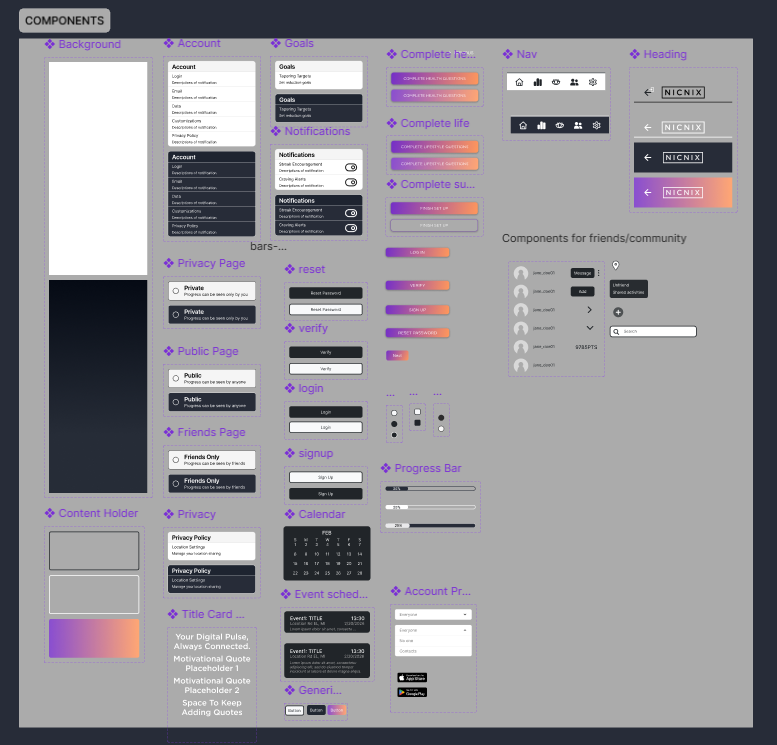
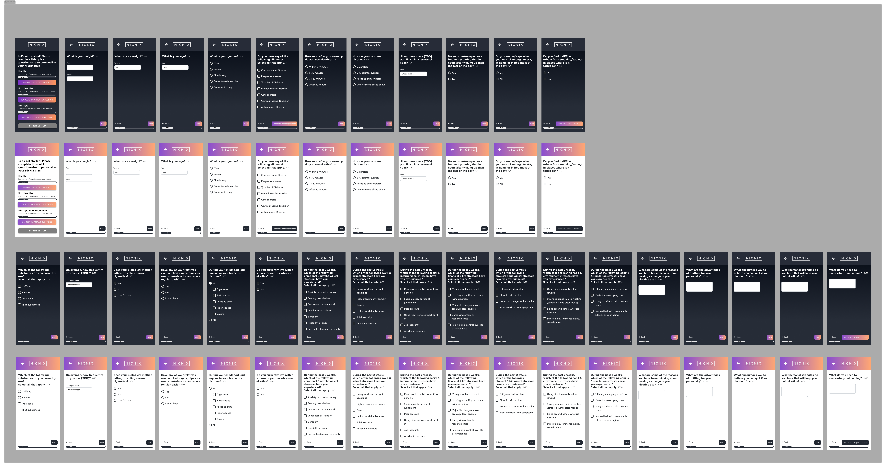
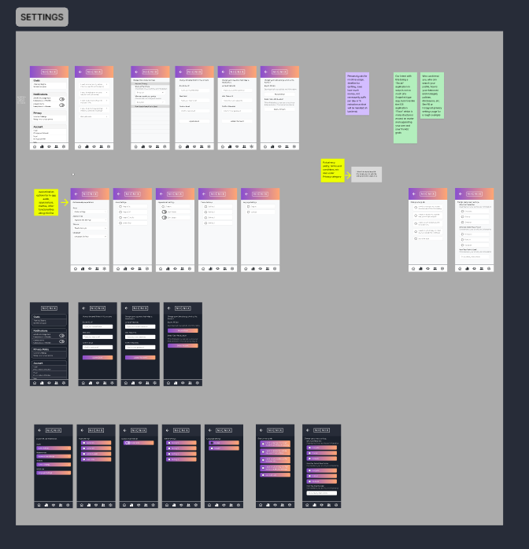
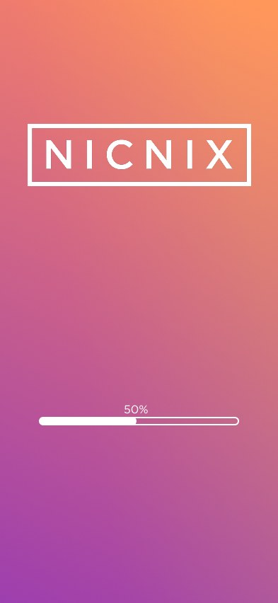
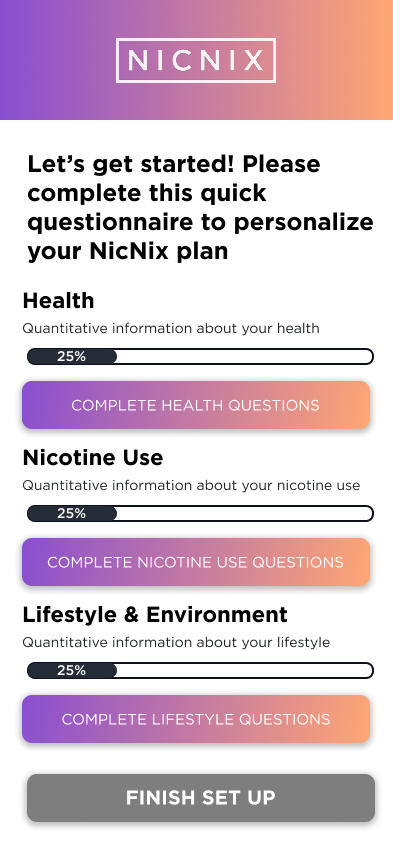
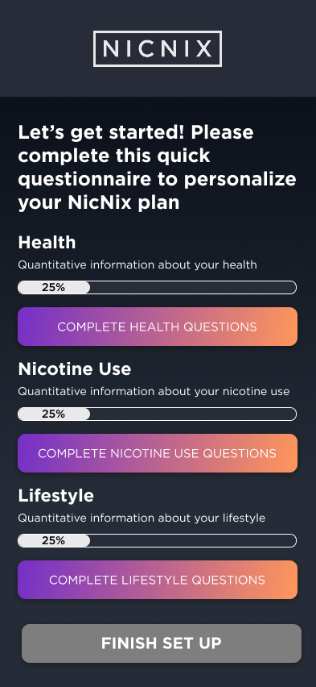
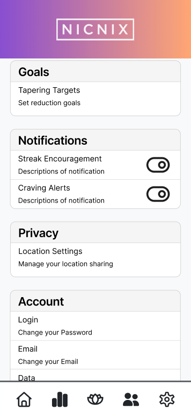
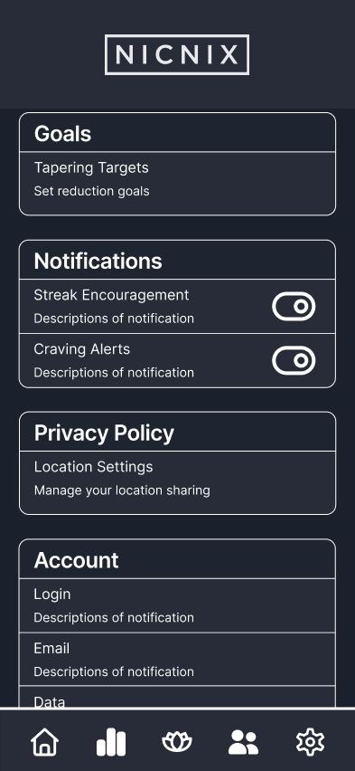

Nic-Nix
Overview
Nic-Nix is an app-controlled vape designed to help users reduce nicotine addiction. My team continued development from a previous design team, redesigning the user interface, components, and overall user experience with updated design principles and owner preferences.
My Role
As a UX/UI Designer, I redesigned and expanded the mobile experience in Figma as part of a collaborative design team. My responsibilities included designing new interface screens, maintaining the design system, improving user flows, and ensuring consistency across the application. I also collaborated directly with project owners, incorporated feedback from DUX Lab critiques, and presented our work throughout the design process.
Goals
The goal of this project was to improve an existing mobile application protoype by creating a more intuitive, accessible, and cohesive user experience. Rather than starting from scratch, our team focused on identifying areas for improvement, incorporating owner feedback on the rebrand, and expanding the application's functionality while maintaining a consistent visual identity. Our target was to prepare the application for a future release.
Concept
Nic-Nix is designed to support individuals working to reduce nicotine consumption by pairing with a smart vape device. The app allows users to manage device settings, monitor progress, complete personalized onboarding questionnaires, and customize their experience through features such as light and dark mode. Throughout the semester, our team refined the interface to make interactions clearer, navigation more intuitive, and the overall experience more approachable for users. The app was intended to provide a casual, low-stress experience for users, preventing users from feeling overwhelmed while attempting to quit.
Design Process
Rather than completing a single prototype, our team worked through multiple rounds of iteration throughout a semester. We regularly met with the project owners to present new designs, discuss progress, and refine the app based on their feedback. The project was also developed through Michigan State University's Design and User Experience (DUX) Lab, a selective, project-based course in which teams collaborate with real clients. Through regular critiques from faculty and fellow designers, we continually improved the app's usability, accessibility, and overall user experience before presenting the final product.
Final Prototype
Figma Screenshots:
Images of our Figma workspace:

Components Section

Questionnaire Section

Settings Section
Images of the final prototype:

First Screen

Light Mode Start Screen

Dark Mode Start Screen

Light Mode Settings Screen

Dark Mode Settings Screen
Example Video Demo:
Video Demo
Features & Highlights
- Complete onboarding questionnaire flow
- Light and dark mode interfaces
- Comprehensive settings experience
- Reusable Figma component library
- Consistent design system across screens
- Interactive prototype with connected user flows
- Iterative improvements driven by owner and DUX Lab feedback
My Contributions:
- Designed the application's light and dark mode experiences
- Created the settings section and supporting screens
- Designed the onboarding questionnaire flow
- Updated and expanded reusable Figma components
- Designed the navigation bar
- Connected and refined prototype interactions and navigation flows
- Incorporated feedback from project owners and DUX Lab critiques
- Presented design progress during meetings
- Presented the completed project at the MSU Undergraduate Research and Arts Forum (UURAF)
Conclusion
Working on Nic-Nix strengthened my ability to design within an existing product rather than starting from a blank canvas. I gained experience collaborating with project owners, incorporating iterative feedback, maintaining a scalable design system, and presenting design decisions to both project partners and the broader university community. The project reinforced the importance of balancing user needs, technical constraints, and consistent interface design throughout the UX process.